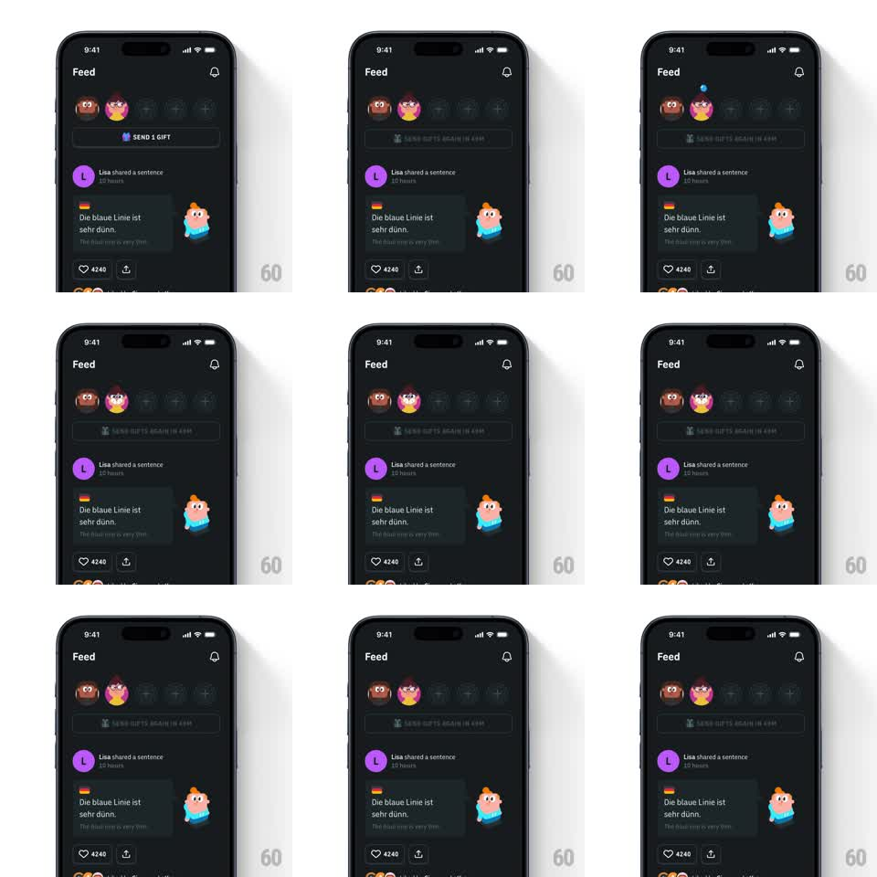

Media
Frame-by-frame

Rebuild this animation 1:1: Duolingo's send-a-gift moment on the social feed - tapping "SEND 1 GIFT" drops a blue gem from the top of the screen onto the friend's avatar, which then celebrates, while the button switches to a disabled cooldown state ("SEND GIFTS AGAIN IN 49H").

Rebuild this animation 1:1: Duolingo's send-a-gift moment on the social feed - tapping "SEND 1 GIFT" drops a blue gem from the top of the screen onto the friend's avatar, which then celebrates, while the button switches to a disabled cooldown state ("SEND GIFTS AGAIN IN 49H").
## Integration
Integration: stack-agnostic spec - springs given as stiffness/damping, timed motions as duration + curve; map every value to your framework and animation library of choice.
## Scene
Dark social feed: friend avatars row top, a "SEND 1 GIFT" button under them, feed cards below (sentence shares with reactions). After gifting, the button dims to its cooldown state.
## Motion spec
Pattern: tap-triggered projectile + state change, ~1.5s.
- On tap: a small blue gem spawns at the top edge and falls in a shallow arc onto the target avatar (400ms, ease-in - accelerating gravity feel).
- Impact: avatar does a happy bounce (scale 1 -> 1.2 -> 1, spring ~350/15) and the gem bursts into 3-4 tiny sparkles (200ms).
- Button transitions: label crossfades to the cooldown text, background dims to disabled gray (250ms), no jiggle.
- Feed content never moves.
## Calibration
- The gem's arc is the charm: slight horizontal drift + gravity acceleration, not a straight drop.
- The avatar bounce is bigger than UI-standard (20% overshoot) - it's a character reaction, not a button press.
## Reduced motion
Gem fades onto the avatar; button state swaps without animation.
## Don't miss
- The gem originates off-screen top, not from the button.
- Cooldown state shows immediately after the burst - no gap where the button looks tappable.